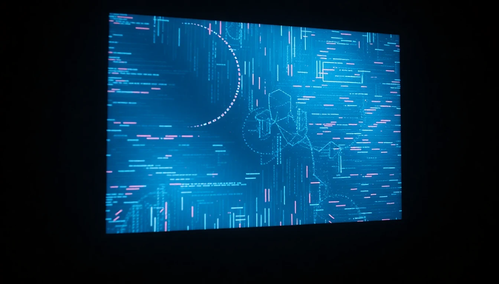
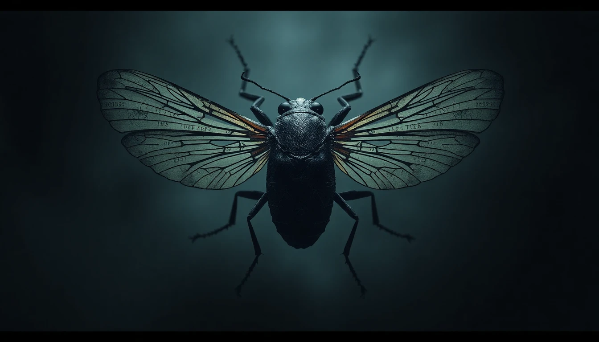

Digital Liminality: The New Frontier of In-Between Spaces

In our increasingly digital world, a new form of liminal space has emerged. From abandoned websites to defunct social media platforms, these digital territories represent a unique type of in-between space that exists neither in the physical world nor fully in the virtual realm.
These spaces evoke nostalgia and curiosity, inviting exploration of the remnants of past digital interactions. They serve as reminders of our online evolution and the transient nature of digital existence.
Dr. Olivia Grey, a digital anthropologist, notes: "Digital liminal spaces are fascinating because they blend the past and present, creating a unique experience that challenges our understanding of permanence in the digital age."
As we navigate these forgotten corners of the internet, we are faced with questions about identity, memory, and the impact of technology on our lives.
The Enigma of Cicada 3301: The Internet's Most Mysterious Puzzle

In 2012, a cryptic message appeared on internet forums claiming to seek "highly intelligent individuals." What followed was an elaborate series of puzzles spanning cryptography, steganography, and internet lore that captivated thousands worldwide.
The organization behind the puzzles, dubbed Cicada 3301, remains anonymous, fueling speculations ranging from secret societies to government recruitment programs.
Despite multiple puzzles over several years, the true purpose and members of Cicada 3301 remain shrouded in mystery, making it one of the internet's most enduring enigmas.
Unveiling the Cult of Saturn: Ancient Symbolism in Modern Times
The Cult of Saturn emerged online between 2009 and 2013, spreading through niche forums and obscure boards. It wove together occult symbolism, cryptic puzzles, and cosmic conspiracies into a narrative that defied easy explanation. Some claim it offered access to hidden websites, secret “libraries,” and eerie fragments of multimedia. Yet, no central doctrine or verified leader ever surfaced, and attempts to chronicle its history often end with contradictory rumors and half-remembered posts lost to digital decay.
To some, it was a hoax—an elaborate lure for conspiracy hunters; to others, it represented a genuine, if secretive, esoteric network. Hard evidence remains scarce: ephemeral links, whispered references in comment sections, and erratic archives. Today, the Cult of Saturn lingers as a digital phantom—an unsettling curiosity that eludes definitive understanding and leaves investigators grasping at fragments of speculation.
Learn more from Eudoxia Mysteries on Youtube: https://www.youtube.com/watch?v=wrccPmFMXY8
The Lost Internet: Exploring Digital Ruins
From GeoCities neighborhoods to abandoned MySpace profiles, the internet is filled with digital ghost towns. These virtual spaces, frozen in time, represent a unique form of digital archaeology that tells the story of our online evolution.
Many of these spaces hold memories of early internet culture, showcasing the creativity and experimentation of users during the dawn of the digital age. Exploring these ruins invites nostalgia and reflection on how far we have come.
Archivists and digital historians are now working to preserve these lost corners of the internet, ensuring that future generations can learn from and appreciate the digital heritage left behind.
Virtual Waiting Rooms: The Modern Liminal Experience
Please wait...
In an era of digital queues and virtual waiting rooms, we find ourselves increasingly suspended in digital limbo. From concert ticket purchases to vaccine appointments, these transitional spaces have become a defining feature of modern life.
Research indicates that the average person spends approximately 47 hours per year in various forms of digital waiting rooms, making them one of the most common liminal experiences in contemporary society.
The Phenomenon of Dead Discord Servers
Dead Discord servers represent a unique form of digital abandonment. Once vibrant communities now stand frozen in time, their last messages hanging in perpetual digital suspension.
These servers often remain in a state of perfect preservation, with conversations, shared memories, and community inside jokes existing in a strange limbo between activity and deletion.
404: The Ultimate Digital Liminal Space
The 404 error page stands as perhaps the most encountered liminal space in digital history. These dead ends and broken links represent the constant flux and impermanence of the digital landscape.
Digital archaeologists estimate that up to 30% of the links from the early 2000s now lead to 404 pages, creating vast networks of digital dead ends that point to content that once was but is no longer accessible.
Dead Internet Theory: Are We Alone Online?
The Dead Internet Theory posits a disturbing possibility: that the vast majority of the internet is now generated by artificial intelligence and bots, with human users becoming an increasingly rare minority in the digital landscape.
Proponents of the theory point to the increasing sophistication of AI-generated content, the prevalence of bot accounts, and the seemingly endless stream of algorithmically-created websites as evidence that authentic human interaction online is becoming increasingly scarce.
"When you really look at it, how much of what you see online is genuinely created by humans?" asks digital theorist Marcus Chen. "The line between authentic and artificial content becomes more blurred every day."
Archive.org: The Digital Library of Alexandria
As websites vanish and digital spaces fade away, the Internet Archive stands as humanity's bulwark against digital entropy. Since 1996, this non-profit organization has worked tirelessly to preserve our collective digital heritage.
Through its famous Wayback Machine, Archive.org has saved over 700 billion web pages, creating a vast historical record of the internet's evolution. "Every day, websites disappear forever," explains Dr. Sarah Martinez, digital preservation expert. "Without Archive.org, we would lose countless pieces of our digital history."
Visit Archive.org to explore this remarkable repository of digital history, where you can journey through time to visit websites as they appeared decades ago.
Famous Liminal Websites: Digital Spaces Frozen in Time
Certain websites have become legendary in digital archaeology circles for their perfect preservation of specific moments in internet history. Space Jam's official 1996 website remains unchanged, a pristine time capsule of mid-90s web design that Warner Bros. has intentionally preserved.
The Heaven's Gate cult website continues to be maintained decades after the group's tragic end, its primitive HTML frozen in a perpetual 1997. These digital artifacts serve as perfect examples of liminal spaces - unchanged despite the internet's evolution around them.
Yale's Art and Architecture site, unchanged since 1997, stands as another famous example of digital preservation through neglect. These sites exist in a strange liminal space between active maintenance and abandonment, neither fully alive nor completely dead.
Lost & Preserved: Web's Most Famous Time Capsules
While many iconic websites have been lost to time, some remarkable survivors and preserved examples still exist:
- Still Active:
- Space Jam (1996) - Warner Bros. maintains this perfectly preserved movie promotional site
- Heaven's Gate - Maintained by a former member, unchanged since 1997
- Bob Dole's 1996 Presidential Campaign - Preserved as a historical artifact
- WWF In The House - Classic Warner Bros. wrestling promotion site
- Lost But Preserved on Archive.org:
- MTV's 1996 Website - Early music industry web presence
- Nintendo (1996) - Original gaming giant's web debut
- Amazon's 1996 Homepage - When they only sold books
- Notable Lost Websites:
- GeoCities (1994-2009) - Once hosted millions of personal homepages
- TheGlobe.com (1995-2008) - Early social networking pioneer
- Pets.com (1998-2000) - Iconic dot-com bubble casualty
- Google Video (2005-2012) - Pre-YouTube video hosting service
These digital artifacts serve as important reminders of the web's evolution. While some have been carefully preserved, others exist only in screenshots and memories, highlighting the importance of digital preservation efforts.